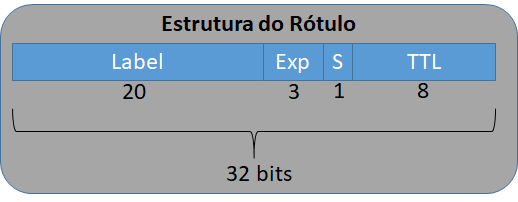

SR - Arquitetura:
- Plano de serviços: a ideia é manter toda a diversidade de serviços.
- Plano de controle (software): OSPF/IS-IS/BGP são usados para anunciar informações do segmento.
- Plano de dados (hardware): reusa MPLS e IPv6.
Plano de Controle X Plano de dados:
- Plano de controle é responsável pela inteligência da rede, ou seja, ele define as próximas rotas do fluxo de pacotes na rede, podendo rodar, por exemplo, um protocolo de roteamento ou algo parecido.
- Plano de dados é responsável por encaminhar pacotes na rede, ou seja, ele simplesmente encaminha os pacotes para seu destino que é determinado pelo plano de controle.
Plano de dados
Redes MPLS com SR: utiliza o plano de encaminhamento de dados do MPLS.
| Características | Rede MPLS com SR | Rede MPLS sem SR |
|---|---|---|
| Transporte MPLS básico | IGP | IGP + LDP |
| Túneis TE adicionais para suportar FRR | Não precisa | Precisa |
| Sincronismo entre o LDP/IGP | Não se aplica | Difícil de gerenciar |
| Estados apenas no head-end do TE | Sim | Não. No pior caso: complexidade O(N^2) nos pontos intermediários |
| Otimização de caminho de backup | Sim | Não. |
| Interoperabilidade com a rede MPLS tradicional | Sim | Não se aplica |
| Projetado para SDN | Sim | Não |
| Comutação FRR em 50ms | IGP | IGP + LDP |
| ECMP para criação de túneis TE | Sim | Não |
O SR possui as seguintes funcionalidades:
- PHP (penultimate Hop Popping): A função realiza um processo no qual o rótulo mais externo do pacote é removido por um LSR,
antes que o pacote seja passado para um LER adjacente. Essa função é importante em ambientes VPN MPLS de camada 3. Uma das vantagens é reduzir a
carga no LER. Caso essa função estivesse desabilitada o LER teria que realizar pelo menos duas pesquisas de rótulo:
1 - O rótulo mais externo, identificando que o pacote estava destinado a ter esse rótulo removido nesse roteador; 2 - O rótulo interno, para identificar qual instância de roteamento e encaminhamento virtual (VRF) a ser usada na pesquisa de roteamento IP subsequente. - Rótulos explicit-null: Um valor de 0 representa o rótulo Explicit NULL Label do IPv4. Essa etiqueta indica que a pilha de rótulos deve ser removida, e o encaminhamento de pacote deve ser baseado no cabeçalho do IPv4. Isso ajuda a manter os bits Exp seguros até o roteador de saída. É usado em QoS baseado em MPLS. 
Exemplo - SR-Plano de dados MPLS: Na imagem podemos ver que o roteador 3 é o penúltimo salto (PHP), então uma operação de remoção do rótulo mais externo é efetuada e o pacote chega ao roteador 4, de destino, sem o rótulo baseado no endereço IP. E a opção explicit-null é configurável para um prefixo SID. No exemplo, a LIB do roteador 3, no rótulo de saída (Label Out) seria explicit null, sendo útil para repassar os EXP bits do LSR 3 para o LER 4.
Redes IPv6 com SR:
- A lista de segmentos está codificada na extensão do cabeçalho para roteamento pela fonte;
- A lista de segmentos pode ser baseada no IGP ou BGP;
- Não necessita de atualização de toda a rede, pode operar com ou sem SR, possibitando a adoção gradual da tecnologia.
Campos - cabeçalho do IPv6 (Segment Routing Header - SRH):
- Next Header: é um seletor de 8 bits que identifica o tipo de cabeçalho imediatamente seguido pelo SRH;
- Hdr Ext Len: define o tamanho do cabeçalho de SRH em octectos, descontando os primeiro oito octetos;
- Routing Type: ainda depende de definição pelo IETF;
- Segments Left: contém o índice da lista de segmentos, indicando o próximo a ser inspecionado. É decrementado a cada inspeção;
- Last Entry: é um “offset” no SRH, não incluindo os 8 primeiros octetos. É expresso em múltiplos de 16 octetos apontando para o último elemento da lista de segmentos. Representa o primeiro segmento da lista;
- Flags: 16 bits para flags. Os bits de 4 a 15 definem o tipo de codificação dos endereços IPv6 na lista de políticas (Policy List);
- Segment List[n]: é o endereço IPv6 que representa cada segmento do caminho. A lista de segmentos é codificada de forma reversa, ou seja, o último segmento é o primeiro da lista.
Exemplo - SR-Plano de dados IPv6:
Bloco Global de Roteamento por Segmentos (SRGB)

Plano de Controle IGP do SR: IS-IS e OSPF
...
...

Conclusão
Esperamos que este trabalho, envolvendo Redes de Computadores, tenha ajudado a ampliar o entendimento do leitor sobre Segment Routing. Apesar dos poucos exemplos e ser uma breve introdução, que esta pesquisa possa servir de ponto de partida para inspirar e propagar conhecimento.